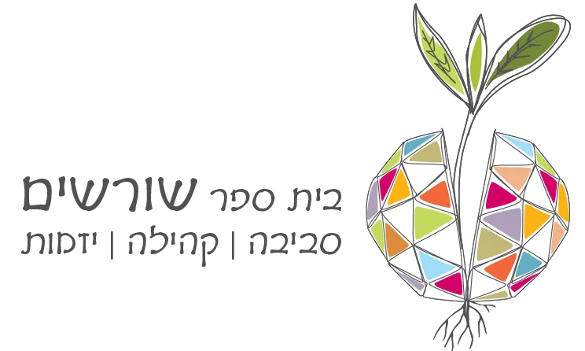
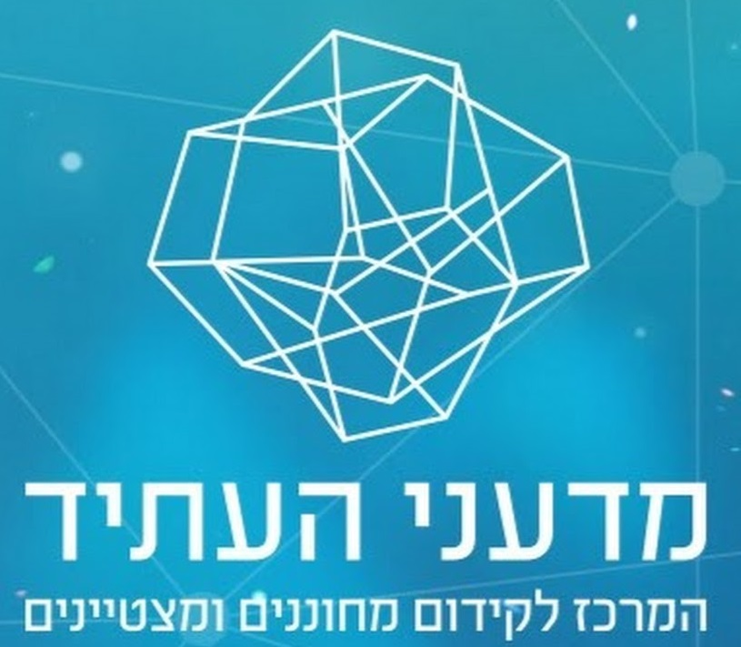
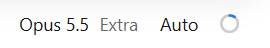
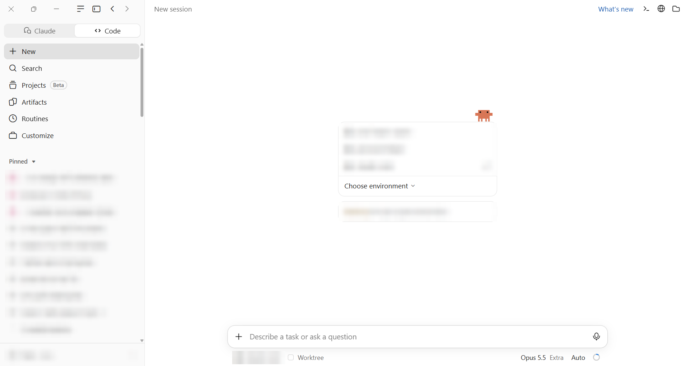
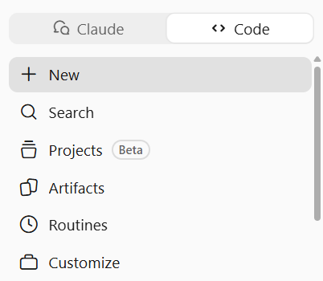
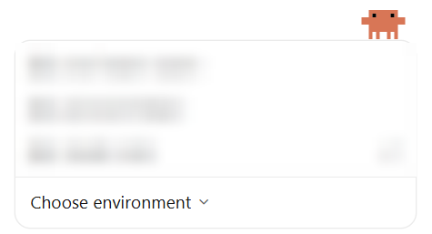
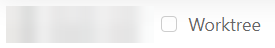
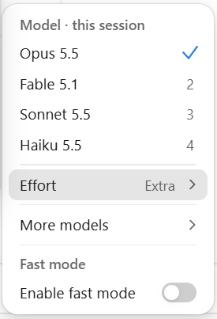
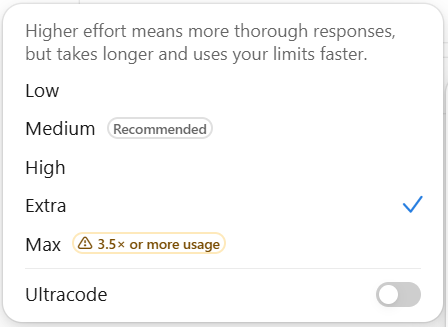

סדנה לסגל האוניברסיטה הפתוחה
קלוד קוד,
מפגש 1
להיכנס לכלי ולהתחיל לעבוד
תום הגלעדי · יום שלישי, 3.11.2026
קצת עליי
- איש חינוך עשרים שנה: מורה, מייסד ומנהל בית הספר "שורשים", וסגן מנהל מרכז פסג"ה תל אביב-יפו.
- מאז 2023 עוסק רק בממשק שבין בינה מלאכותית לארגונים לומדים: חינוך, אקדמיה, ועסקים שעובדים עם סוכנים.
- מגיש את הפודקאסט "דיבורי בינה", מנהל את קהילת "בינה מלאכותית בחינוך ובאקדמיה" (כ-40 אלף חברים), וכתב עם פרופ' אמנון גלסנר את הספר "אהבת למידה וחדוות גילוי".




עם מה יוצאים היום
1. סוכן מול צ'אט
להבין במה סוכן שונה מצ'אט, ולמה זה משנה את העבודה.
2. להתמצא באפליקציה
תיקייה, מודל, מאמץ והרשאות.
3. שליטה
לדעת לעצור, לחזור אחורה ולשמור על המידע.
4. משימה אמיתית ראשונה
שקלוד ביצע אצלכם/ן במחשב.
חמשת החלקים של היום:
לפני שמתחילים: בודקים את ההתקנה
סקר בצ'אט: כתבו מספר אחד
- האפליקציה פתוחה, ואני רואה את הלשונית Code
- נתקעתי בהתקנה
- אין לי מנוי בתשלום
שלושה עדכונים מאז מדריך ההתקנה
- האפליקציה מציעה עדכון? מעדכנים עכשיו. המסך השתנה בשבועות האחרונים.
- לא צריך להתקין גיט.
- הלשונית שנקראה במדריך Chat and Cowork נקראת היום Claude
צ'אט מסביר, סוכן עושה
ההבדל הוא בין מישהו שמסביר לכם/ן איך לעשות משהו, לבין מישהו שיושב ועושה אותו מולכם/ן.
מה הופך תוכנה לסוכן
סוכן מקבל מטרה, ואז עובד בלולאה: מתכנן, פועל, בודק ומתקן.
הוא חוזר על זה עד שהעבודה גמורה, או עד שהוא צריך אתכם/ן.
לפי אנתרופיק: סוכן פועל בלולאה שהוא מנהל בעצמו.
מקור: אנתרופיק, 9.4.2026
Trustworthy agents in practice
שלכם/ן
הסוכנים בשוק
dots
אופן איי איי · מ-29.9.2026
סוכנים אישיים שעובדים ברקע, כל אחד עם מחשב ודפדפן משלו, בתוך צ'אט ג'י-פי-טי.
Codex
אופן איי איי
סוכן שכותב, מתקן ובודק קוד. כלול במנויי צ'אט ג'י-פי-טי.
Grok Bot
אקס איי איי · מ-11.8.2026
סוכנים שרצים כל הזמן על מחשב בענן, ועובדים גם באתרים בלי חיבור מסודר.
Instinct
סטארט-אפ · בטא בהזמנה
עוזר אישי שמסמסים או מתקשרים אליו, והוא פועל בטלפון ובמחשב.
Claude Duet בקרוב
אנתרופיק · הוכרז 21.10, כרגע רק בארצות הברית
סוכן יוזם: תדריך יומי, עבודה ברקע, ושאלה לפני כל פעולה.
המשותף לכולם: לא רק עונים, אלא עושים.
היום: קלוד קוד
- אחד הסוכנים החזקים בשוק.
- נבנה במקור למתכנתים, והיום משמש הרבה מעבר לזה: בניית כלים, אוטומציה של עבודה חוזרת, ועבודה על מסמכים.
- עובדים באפליקציה, בלי טרמינל.
איך קלוד קוד בנוי
את/ה
נותנים משימה במילים
המודל, "המוח"
בשרתים של אנתרופיק. חושב ומחליט מה לעשות
המעטפת, "הידיים"
קלוד קוד עצמו: נותן למודל כלים, שומר על ההרשאות ומנהל את הזיכרון של השיחה
agentic harness
התיקייה במחשב
הקבצים שהוא קורא ועורך, והפקודות שהוא מריץ
קבצי ההוראות
מה שהוא קורא בתחילת כל שיחה
המודל חושב. המעטפת פועלת. אתם/ן מחליטים/ות מה מותר.
מה הוא יכול לעשות במחשב
לקרוא, ליצור ולערוך קבצים
לחפש בתוך קבצים ותיקיות
להריץ פקודות במחשב
לחפש ולקרוא באינטרנט
להבין קוד ולנווט בו
ושני מנגנוני בטיחות:
הרשאות
מה מותר לו לעשות בלי לשאול אתכם/ן.
נקודות שמירה
אפשר לחזור אחורה על עריכות של קבצים.
לפי העמוד "איך קלוד קוד עובד" בתיעוד הרשמי.
מסלולי המנוי
| מסלול | לחודש | קלוד קוד | מה מקבלים |
|---|---|---|---|
| Free | 0 | לא | אין גישה ללשונית הקוד |
| Pro | 20 דולר, או 17 בתשלום שנתי | כן | אופוס, סונט והייקו. פייבל רק בתשלום נוסף. מספיק לסדנה |
| Max | 100 דולר | כן | פי 5 מפרו |
| Ultra | 200 דולר | כן | פי 10 מפרו בשבוע, ובלי מגבלת חמש השעות |
| Team | 25 או 125 דולר למושב | כן | למוסדות. בלי אימון על המידע |
| Enterprise | 20 דולר למושב, ועוד השימוש | כן | למוסדות גדולים |
המחירים בדולרים, לפני מע"מ, נכון ל-1.11.2026. מקור: דף המחירים ומרכז העזרה של קלוד.
המכסה, ומה שורף אותה
איך זה עובד
חלון של חמש שעות שמתחיל בהודעה הראשונה, ועוד מגבלה שבועית.
הצ'אט וקלוד קוד חולקים את אותה מכסה.
מה שורף מהר
מודל חזק · מאמץ גבוה · שיחה ארוכה
שתי מלכודות עלות בפרו
Fable 5.1 ו- Fast mode עובדים רק על חשבון קרדיט בתשלום, גם כשנשארה מכסה.
ההמלצה להיום
Opus 5.5 במאמץ Medium
כמה נשאר?

לוחצים על הטבעת שבשורה מתחת לתיבת ההקלדה.
מפת המסך
- 1שתי הלשוניות
- 2שיחה חדשה
- 3השיחות שלכם/ן
- 4בחירת תיקייה וסביבה
- 5תיבת ההקלדה, והפלוס לצירוף קבצים
- 6הכתבה
- 7התיקייה שעובדים בה עכשיו
- 8המודל ורמת המאמץ
- 9מצב ההרשאה, וטבעת השימוש

1 2 3 4 5 6 7 8 9צילום מסך של לשונית הקוד, 1.11.2026. הפרטים האישיים מטושטשים.
שתי לשוניות
Claude
העוזר הכללי: שיחה, מסמכים ומצגות, חיבור לאפליקציות, וגם עבודה על תיקייה במחשב.
עד ספטמבר אלה היו שתי לשוניות: Chat, Cowork
Code
קלוד קוד: סוכן שעובד בתוך תיקיית פרויקט. קורא, יוצר ועורך קבצים, מריץ פקודות ובונה כלים. זו הלשונית שלנו היום.
למה בלשונית הקוד? רואים כל פעולה, שולטים בהרשאות, והפרויקט זוכר את ההוראות שלו.

שיחה חדשה ובחירת תיקייה
- לוחצים New או Ctrl+N
- בוחרים תיקייה מהרשימה שבמרכז המסך, או תיקייה חדשה.
- בפעם הראשונה בתיקייה קופץ חלון אישור. מאשרים רק תיקייה שאתם/ן מכירים/ות.
- הסביבה: Local , כלומר על המחשב שלכם/ן. את Worktree משאירים לא מסומן.
- כל שיחה זוכרת את התיקייה שלה.


בחירת מודל
| המודל | למה הוא טוב, לפי אנתרופיק |
|---|---|
| Opus 5.5 | עבודה ארוכה ומורכבת. ברירת המחדל, וההמלצה להיום. |
| Fable 5.1 | החשיבה התובענית ביותר. בפרו עולה כסף נוסף. |
| Sonnet 5.5 | השילוב הטוב ביותר של מהירות וחוכמה. |
| Haiku 5.5 | משימות פשוטות ומהירות. |
- אפשר להחליף מודל באמצע שיחה.
- Fast mode בתחתית התפריט: לא לגעת. הוא עולה כסף נוסף.

רמת מאמץ
מתוך התפריט עצמו: "ככל שהמאמץ גבוה יותר, התשובה יסודית יותר, אבל לוקחת יותר זמן ושורפת את המכסה מהר יותר."
- חמש רמות: Low, Medium, High, Extra, Max
- הבינוני מסומן "מומלץ", והוא ברירת המחדל.
- ליד המקסימום כתוב שהוא צורך פי 3.5 ויותר. הוא גם לא תמיד טוב יותר: לפעמים הוא חושב יותר מדי.
- Ultracode מפרק משימה גדולה בין כמה סוכנים במקביל. לא היום.

מונה ההקשר וטבעת השימוש
טבעת השימוש: המנוי שלי
כמה מהמכסה ניצלתם/ן. משותפת לכל מקום שבו אתם/ן משתמשים/ות בקלוד.
כרטיס ההקשר: השיחה הזו
המחשה. הכרטיס מופיע בעמודה שליד שיחה פעילה.
כמה מקום תפוס בזיכרון העבודה של השיחה. מתאפס בכל שיחה חדשה.
- כשההקשר מתמלא, קלוד מכווץ את השיחה לבד וממשיך.
- כלל אצבע: משימה חדשה = שיחה חדשה. איך מנהלים את זה לעומק: במפגש 2.
צירוף קבצים

כפתור הפלוס
תמונות, קובצי פי-די-אף וקבצים אחרים מהמחשב.
גרירה
גוררים קובץ לתוך תיבת ההקלדה.
אזכור @
מקלידים את הסימן ואת שם הקובץ, לקובץ שכבר נמצא בתיקייה.
צירוף מביא קובץ מבחוץ. אזכור מפנה לקובץ שכבר בתיקייה.
מי מחליט: מצבי ההרשאה
| המצב | מה קורה |
|---|---|
| Manual | שואל לפני כל עריכה ולפני כל פקודה. |
| Accept edits | עורך קבצים לבד, ושואל לפני פקודות. |
| Plan | קורא ומתכנן. לא משנה כלום עד שמאשרים. |
| Auto | פועל לבד, עם בדיקות בטיחות ברקע. כאן מתחילה כל שיחה חדשה. |
| Bypass permissions | בלי שום שאלה. מוסתר כברירת מחדל, ולא נוגעים בו. |
עוצרים וחוזרים אחורה
עצירה
כפתור העצירה, או Esc
תיקון כיוון
בלי לעצור: כותבים הודעה ולוחצים Enter
חזרה אחורה
בתפריט של הודעה: Rewind to here . או Esc פעמיים כשהתיבה ריקה. בוחרים מה להחזיר: את הקבצים, את השיחה או את שניהם.
לכן, על משהו חשוב: עובדים על עותק.
מקור: עמוד נקודות השמירה בתיעוד הרשמי, סעיף המגבלות.
תרגיל חימום: מה יש בערכה?
- פותחים שיחה חדשה על תיקיית ערכת התרגול.
- מדביקים מהצ'אט:
הצלחתם/ן אם
מופיעה טבלה עם שורה לכל תיקייה.
סיימתם/ן מוקדם?
"איזה תרגיל הכי מתאים למי שמלמד/ת קורס מקוון, ולמה?"
הפסקה של 5 דקות
למה תיקיות מסודרות
- קלוד רואה תיקייה אחת: זו שבחרתם/ן, וכל מה שמתחתיה.
- צר וממוקד עדיף: תיקייה לכל פרויקט, ולא "כל המסמכים שלי".
- שמות קבצים ברורים: הוא מוצא מהר יותר ומבין טוב יותר.
- בתיקייה נשמרות גם ההוראות של הפרויקט. נראה בעוד רגע.
- היום עובדים על המחשב שלכם/ן. על עבודה בענן נדבר במפגש 2.
כל המסמכים בתיקייה אחת
תיקייה לכל פרויקט
מה הכלי רואה, ומה לא מכניסים
רואה
את התיקייה שבחרתם/ן. כדי לצאת ממנה הוא צריך אישור. אבל פקודה שאישרתם/ן יכולה לגעת בכל מה שהמשתמש שלכם/ן במחשב נוגע בו.
נשלח לאנתרופיק
כל מה שבשיחה, כולל תוכן הקבצים שהוא קרא. מוצפן בדרך.
מתג האימון
Settings > Privacy > Help improve our AI models
כבוי: לא משמש לאימון, ונשמר 30 יום. דלוק: משמש לאימון, ונשמר עד 5 שנים. זה במנויים הפרטיים. במנויים מוסדיים אין אימון כברירת מחדל.
מקורות: עמודי האבטחה והשימוש במידע בתיעוד הרשמי, ומאמר הפרטיות של אנתרופיק (3.8.2026).
מה זה קובץ מארקדאון
כך הוא נראה מבפנים
וכך הוא נראה מעוצב
ההוראות של הקורס
- לכתוב בעברית
- לא לשנות את הסילבוס
- לשאול לפני שמוחקים
- קובץ טקסט רגיל, עם כמה סימנים פשוטים. שם הקובץ נגמר ב- .md
- בני אדם קוראים אותו בקלות, וגם מודלים. לכן קלוד כותב בו את ההוראות שלו.
הקבצים שקלוד קורא
| השם | השם הרשמי | על מה הוא חל | הקובץ |
|---|---|---|---|
| הוראות אישיות | User instructions | על כל הפרויקטים שלכם/ן | CLAUDE.md בתיקיית המשתמש |
| הוראות פרויקט | Project instructions | רק על התיקייה הזו | CLAUDE.md בתיקיית הפרויקט |
| זיכרון אוטומטי | Auto memory | מה שקלוד רושם לעצמו תוך כדי עבודה | MEMORY.md על המחשב שלכם/ן |
| סקילים | Skills | "מתכונים" שנטענים רק כשצריך אותם | SKILL.md |
- לא צריך לכתוב אותם. אומרים לקלוד "תזכור ש..." או "תכתוב קובץ הוראות לפרויקט".
- כן צריך לדעת שהם קיימים, ושאפשר לפתוח ולקרוא אותם.
קובץ ההוראות הוא מכתב היכרות לעוזר/ת חדש/ה, ביום הראשון בעבודה.
איך מבקשים מסוכן
מטרה
מה רוצים שיהיה בסוף.
הקשר
על אילו קבצים, בשביל מי, ובאיזה סגנון.
גבולות
מה לא לשנות ובמה לא לגעת.
סיום
איך נדע שזה מוכן.
- מתחילים במצב Plan , ומבקשים שישאל שאלות לפני שהוא מתחיל.
- ובסוף: בודקים. סוכן טועה בביטחון מלא.
תורכם/ן: בוחרים תרגיל
כל התרגילים הם הצעות. אפשר לשנות כל פרומפט לפני ההעתקה.

הנחיות לתרגול
כשמשהו לא עובד
| מה קורה | מה עושים |
|---|---|
| הוא לא רואה את הקובץ | בודקים שבחרתם/ן את התיקייה הנכונה. |
| קופצת שאלת אישור | קוראים מה הוא מבקש לעשות, ומאשרים או מסרבים. |
| הגעתם/ן למגבלת השימוש | מחכים שהחלון יתחדש. בכרטיס שמופיע אפשר לסמן המשך אוטומטי כשהמגבלה מתחדשת. |
| הוא הלך לכיוון לא נכון | עוצרים, מתקנים במילים, או חוזרים אחורה. |
| ההכתבה לא קולטת עברית | מקלידים. |
ועוד: צילום מסך לצ'אט של הזום, ואני עונה.
חמישה דברים לקחת הביתה
- סוכן עושה, צ'אט מסביר.
- תיקייה אחת, מסודרת, לכל פרויקט.
- קודם תוכנית, אחר כך ביצוע.
- אפשר לעצור ולחזור אחורה, אבל לא על הכל.
- לא מכניסים מידע מזהה על סטודנטים.
מה במפגש 2 (שלישי, 10.11)
- מה קרה בשבוע, ופתרון של מה שנתקע
- חיבור מקורות: יומן, דואר וקבצים בענן
- ניהול חלון ההקשר, ופקודות סלאש
- עבודה בענן, ומה זה גיטהאב
- פרויקט אמיתי שכל אחד/ת מביא/ה מהעבודה
תודה
תום הגלעדי